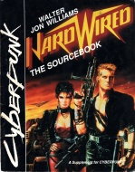

|  | Fiche technique |
| Supplément pour le jeu de rôles Cyberpunk 2013, édité par R. Talsorian Games (1989) | |
| Langue | Anglais |
| Thème | Univers tiré du roman "Câblé" de Walter Jon Williams |
| Qualité du background | - |
| Qualité des scénarii | - |
| Qualité des règles | - |
| Qualité des illustrations | - |
| Qualité de l'écriture | - |
Le roman "Hardwired" de Walter Jon Williams est à mon goût un des meilleurs de la famille Cyberpunk. Malheureusement, ce supplément n'est pas à la hauteur de ce dont il s'inspire, et cela malgré la collaboration de l'auteur. Le background se contente de résumer ce que l'on sait déjà après lecture de l'oeuvre, et n'approfondit pas. Le système alternatif est simpliste. Quelques détails sur des implants ou des drogues peuvent être sympathiques, mais là encore, ça manque de substance. Quant au passage sur l'informatique, s'il a le mérite d'être moins stupide que celui de CP2020, il se transforme vite en leçon pour grand débutant, ce qui n'est pas mieux. Et pour nous achever, trente pages de mini-scénarii sans originalité, dont on se serait bien passé. Bref, achetez-vous le roman et dispensez-vous du supplément, dont les illustrations sont hideuses à l'exception de la magnifique couverture de Royo. Un autre supplément tiré d'une oeuvre existe : il s'agit de When Gravity Fails.
{kind=link}